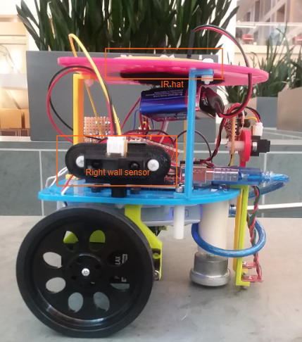

Final Design

Introduction
Our goal as a group of four students was to build a robot that could have the following functionalities:
- Navigate a maze autonomously
- Avoid other robots
- Detect treasures on maze walls
- Send information about the maze to a remote computer
The weekly work over the semester cumulated in a competition against all other groups in the class, during which multiple teams map the same maze simultaneously. We map as much of the maze as possible in the five minutes allotted while detecting treasures. As the robot traverses the maze, it senses the presence of other robots’ IR signals using a phototransistor, which informs the search algorithm.
Line Following
For the task of line following, we used two line detectors along with simple analog reads to determine the position of our robot (either on or off a line). Like many other components on our robot, performing an analog read on the sensors returns a value between 0 and 1023 which we interpreted using a threshold. Then, if a value read on the left or right sensor was less than the threshold, we turn (by writing values to our wheel servos) in the direction of that sensor to appropriately correct our direction of heading. To make turns, we similarly set the servos to appropriate values, delay for a short period of time required to complete the turn, and finish by spinning in a while loop until the line detector values read are greater than the threshold again.
Wall Detection
We utilized 3 wall sensors: a right, left, and front wall sensor. Although originally, we had only implemented a right and left wall sensor, we decided to also implement a front wall sensor after seeing it took us around 2.5 minutes to map out a 4x5 maze due to constantly needing to check for a front wall ( by turning our robot, using either our left or right sensor ) at intersections.
We did this by using a multiplexer which would enable us to connect both the microphone and IR circuitry to the same analog pin, giving us another analog pin to use for the front wall. Since the microphone was only used once in the beginning, we select the microphone pin to use the analog pin until it detects a 660 Hz tone and allows the robot to move. Then, it will switch to only allow to the IR ( robot detection ) to use the analog pin.
Within the code, we check for the walls at each intersection and save it into a struct that kept track of a block’s walls. It also then enabled us to decide what direction we could head in with north being first priority, east second, south third, and west last as further described in our maze traversal code.
Microphone
As shown in Lab 2, we continued to use an amplifier to amplify the signal received from the microphone since the raw microphone output was too low.
We then used FFT to determine when a 660Hz tone was detected. Initially, we used 256 bins as shown in the microphone lab. However, we found that the FFT code took up too much space, causing us to have little memory space left for other code. It also created a fear that we would run out of memory while running the robot. Thus, we switched to 128 bins and averaged the values the microphone saw so that we would be able to be sure that we detected a 660 Hz tone. To determine which bin to use to detect the 660Hz tone, we simply needed to divide in two the previous bin we had used for the 256bin FFT code.
After detecting the 660Hz tone, the robot would be allowed to leave the start up code and move on to the loop. We would then turn the mic off and focus the analog pin to read from the IR sensor to detect robots.
The 660 Hz tone is shown on the oscilloscope.
IR Sensing
We continued to use a lowpass filter that would deamplify the frequencies around 6.08kHz ( the frequency of each robot’s IR hat). Since the amplitude was small, we also utilized an op amp to amplify the data received from the IR.
We then used FFT again to detect a frequency of 6.08kHz which would tell us if there were a robot in our path. We averaged the FFT information to ensure we really detected a robot and then used BFS to determine which next block was readily available for us to move to.
Camera
Prior to the final competition, we had our camera set up and ensured it worked properly. We set up the camera registers as follows:
Then, as the camera sends over a 565 color format, 5 bits for red, 6 for blue, and 5 for green, we needed to downsample it so that it would fit the FPGA’s 332 format, 3 bits for red, 3 or blue, and 2 for green. We did this by taking the most significant bits in each bucket for red, blue, and green.
In order to get the image to properly display, we needed to decode the data packets being sent from the camera. At each rising edge of the HREF signal, we were sent the row of the frame and at each VSYNC rising edge, we were signaled the end or start of a new frame. Just as done in Lab 4, we continued to use this FSM diagram to display our camera feed:
As seen in milestone 4, we were able to distinguish between the treasures by reading three rows in the frame: the 1/4th , 1/2th, and 3/4th rows. We then checked each row for the detection of a blue or red pixel. Depending on which pixel we saw it on, we were able to detect if it were triangle, square, or diamond.
- Triangle: first pixel of the right color keeps moving to the left in each row.
- Square: first pixel of the right color remains in the same column in each row with an allowable error range of 10 pixels.
- Diamond: first pixel moves from first row’s column to the left of it and then back to the right.
Below, a red triangle is detected correctly. The green lines indicate detection of the start of the shape.
The night before, we had ensured camera was working properly. However, when we mounted it on the robot using the on-board arduino, we found that the camera circuitry was causing a shortage, not allowing us to load any arduino code onto the robot. We were not to find a reason for this and we made the decision to not use the camera. In addition to this, we had thought about leaving the camera mounted in case we had extra time to look at the camera and try to debug it again.
However, the camera and FPGA caused an imbalance in our robot that would occasionally cause it to fall backwards. To focus more of our time to the maze traversal and other issues that had arose ( weak wires, maze traversal debugging, etc ) we decided to also take the camera and FPGA off.
In the future, it may have been better to put the camera on earlier but in the moment and situation we were in, we decided it was best to take it off.
Maze Traversal
For general maze traversal, we used a DFS-esque search pattern, with priority on cardinal directions. Before implementing the algorithm on the robot, we simulated it in Matlab using the framework from 2017 Team Alpha.
The information of visited squares, including wall status, is stored in a 2d array the size of the maze. For efficiency of RAM usage, we used a bitfield struct, allowing us to store all the information we need per square in a single 8-bit integer.
For the backtracking step required by the DFS, we used a BFS pattern, searching for a path to the closest unvisited square. We used a queue data structure to perform the BFS, pushing new paths to the queue and looking for new paths by popping of the queue. The status of squares already visited by the search is stored in a temporary 2d array of the size of the maze.
The robot will move based off the priority order of (north, east, south, west), avoiding already visited squares, walls, and other robots. This means that if the north is unobstructed, the robot moves north, otherwise it checks if the east is unobstructed, and so on. If the robot hits a “dead-end,” because of walls, other robots, or visited squares, it begins a backtrack in software. By using “breadcrumbs” left by the program in the 2d array of the maze, the robot software is easily able to return to a square that has an unvisited path. The “breadcrumbs” are a pointer to the square the robot came from when first entering a square. Once an unvisited square is found by the backtrack, the robot runs a BFS to that square and returns the direction the robot should move to make progress toward the “goal,” which is the unvisited square discovered by software.
The BFS is rerun by the robot if it happens to see another robot on its intended path, in order to try to avoid the other robot while still making progress to the goal.
The entirety of this logic handled by a state machine, making the code very easy to reason about. The robot changes states when it makes a turn. When the robot has confirmed that the direction it is currently facing is unobstructed and will make progress toward mapping the whole maze, it exits the state machine and updates both its orientation and its location in the maze before moving to the next intersection.
Transmitting to Base Station
We were able to get our GUI and transmission to the base station working properly. Within the on-board robot software, at each intersection we would transmit a data packet that would tell the GUI the walls in that block, location of the robot, and treasure information. We did this by creating a struct ( 16 bits long ) and sending it over using the radio.write() function where each bit represented a part of information as shown below:
Treasure decoding:
The base station would then receive this information and decode it properly. While decoding the bits, we would add on to a message that would finally be printed out to the serial monitor for the GUI to read. The message was creating using the parameters as mentioned in the GUI readme file found here: https://github.com/backhous/ece3400-maze-gui
Structure
The physical structure of the robot is shown below

Our main considerations for the design include the height of the IR hat, placement of the IR sensor, placement of the camera, balancing the robot, and width of the line sensors. The IR hat needs to radiate at exactly 6” above the ground. To do this, we mounted the the IR hat on the bottom side of the top shelf. When placing the rest of the components, we ensured that none of them blocked the IR signal from reaching other robots.
The IR sensor must be perpendicular to the IR light. Since our robot needs to avoid robots that are in front of it, the sensor is on the front of the robot directly above the front wall sensor.
The camera needs to be aligned with the height of the treasures, which span from 3.5 to 5 inches above the ground.
To account for our heavy battery pack on the back of the robot, we placed our second battery pack on the top front of the robot, which solved our balance issue.
The line sensors straddle the white line so that if the robot begins to veer off course, one of the sensors detects a white line and the movement is corrected.
This also guarantees that if the robot is completely off course, it will resume line following as soon as a line is reached.
For the final competition, we removed the camera and FPGA, and place the IR hat on the top of the top shelf.
Control
Our control algorithm determined a sequence of checking sensors and moving the servos. We started with line following, and as we added capabilities to the robot, we decided an ordering for the commands. Below is a pseudo-code example of our control flow:
Startup
Wait for microphone to detect 660 Hz
Main Loop
If at an intersection
Check front, left, right walls
Check IR sensor for robot
Move as if the robot is a wall
Determine next location based on open squares and search algorithm
Move with priority order: North, East, South, West
If no unvisited squares, move to last square with unvisited neighbor
Determine direction to turn to face next position
Update orientation relative to north
Mark block as visited
Save parent block
Move to next block
Send location to maze GUI
Else
Line following
Competition
We competed in both rounds and failed to get to finals. The day of the competition, although it was working at 1 AM, we found that when we ran it on the actual maze, it had begun to act strangely, making continuous U-turns despite there being no robot or wall in front of it.
Results
Unfortunately, both rounds we were only able to see our robot move one block before continuously making U-turns. The reason for this was found to either be false wall detection or false IR detection.
Future Improvements
In the future, we would like to have ensured our wires were better as some problems arose from wires being either too thin or may have had some internal problem causing occasional moments where some components would stop working. For example, sometimes the wall sensors would be on a permanent high due to either wires not being completely pushed in or for some unknown reason, inferred to be the wire itself. Likewise, we could mill a centralized PCB instead of using several soldered protoboards to simplify connections on our robot, so that we would have fewer wires overall and thus less room for uncertainty.
We could also spend more time on synthesizing non-electrical components for our robot, like the plastic surfaces we ultimately used to hold the entire robot together. This way, we would have more specialized mounts for securely placing these electrical components, and specialized holes for making connections to the Arduino.
We would also improve our robot by implementing the camera and understanding why it may have caused a short in our on-board circuitry through more tests. Our decision to omit the camera in our final robot was made only because of the time constraint.
In general, most of what we would work to improve about our robot has to do with interconnecting subsystems: all of the subsystems talked about above worked on their own (and in fact worked together the night before the competition) but were somewhat unreliable when put together. Securing connections, using a PCB, synthesizing parts, and fixing the possible short introduced by adding the camera to the final design, could help ameliorate this issue.
Conclusion
Over the course of the semester, we acquired and practiced skills to build our robot. We combined knowledge of signal processing for the IR sensor and microphone circuit, hardware programming for the camera, search algorithms for the maze mapping, Arduino coding, and practice working with hardware when building the robot. Even though our robot struggled during the competition, our knowledge gained during the process and the successes along the way were worthwhile.